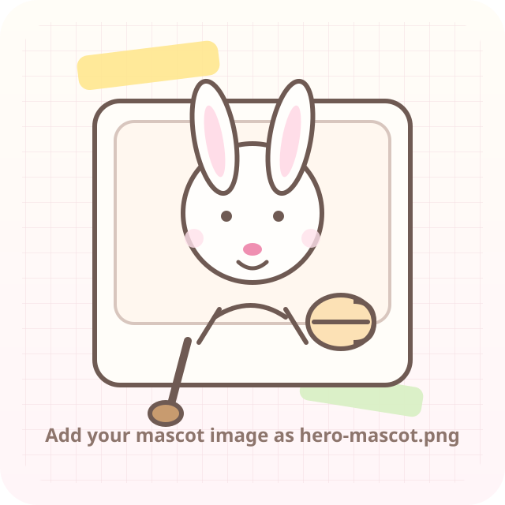

About the cook
A little intro can live here.
Add your story, your cooking style, what kind of recipes you love sharing, and a note that connects your Instagram audience to your website.
Kitchen notebook
Sunday TableCute, calm, and practical
The layout is built for real cooking: big title, clear ingredient list, obvious steps, and related recipes. The look is pastel, soft, and slightly kawaii without becoming busy.
Cookwell-inspired structure for reading while cooking.
Notebook panels, rounded shapes, and gentle illustrated accents.

Featured recipe
Recipe library
These cards keep the cute art direction, but the selected recipe always opens into the more practical step-by-step layout above.
About the cook
Add your story, your cooking style, what kind of recipes you love sharing, and a note that connects your Instagram audience to your website.
Social links